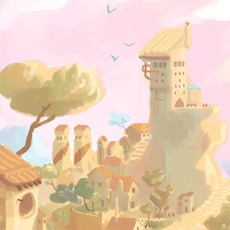

Frankenstein environment art

Gabrielle solo project

Gifs NSFW animations
DragonBox cute maths
Environments concept arts
Bact Attack cute immunology

Tina tamagochi

Myriad fun with particles

Schmilblick care game

Pokemons unofficial monsters

Travel sketchbook